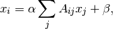
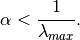
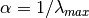
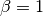

katz_centrality_numpy¶
- katz_centrality_numpy(G, alpha=0.1, beta=1.0, normalized=True)¶
Compute the Katz centrality for the graph G.
Katz centrality is related to eigenvalue centrality and PageRank. The Katz centrality for node
 is
is
where
 is the adjacency matrix of the graph G with eigenvalues
is the adjacency matrix of the graph G with eigenvalues  .
.The parameter
 controls the initial centrality and
controls the initial centrality and
Katz centrality computes the relative influence of a node within a network by measuring the number of the immediate neighbors (first degree nodes) and also all other nodes in the network that connect to the node under consideration through these immediate neighbors.
Extra weight can be provided to immediate neighbors through the parameter
. Connections made with distant neighbors
are, however, penalized by an attenuation factor  which
should be strictly less than the inverse largest eigenvalue of the
adjacency matrix in order for the Katz centrality to be computed
correctly. More information is provided in [R176] .
which
should be strictly less than the inverse largest eigenvalue of the
adjacency matrix in order for the Katz centrality to be computed
correctly. More information is provided in [R176] .Parameters : G : graph
A NetworkX graph
alpha : float
Attenuation factor
beta : scalar or dictionary, optional (default=1.0)
Weight attributed to the immediate neighborhood. If not a scalar the dictionary must have an value for every node.
normalized : bool
If True normalize the resulting values.
Returns : nodes : dictionary
Dictionary of nodes with Katz centrality as the value.
See also
katz_centrality, eigenvector_centrality_numpy, eigenvector_centrality, pagerank, hits
Notes
This algorithm uses a direct linear solver to solve the above equation. The constant alpha should be strictly less than the inverse of largest eigenvalue of the adjacency matrix for there to be a solution. When  and  Katz centrality is the same as eigenvector centrality.
References
[R176] (1, 2) M. Newman, Networks: An Introduction. Oxford University Press, USA, 2010, p. 720. Examples
>>> import math >>> G = nx.path_graph(4) >>> phi = (1+math.sqrt(5))/2.0 # largest eigenvalue of adj matrix >>> centrality = nx.katz_centrality_numpy(G,1/phi) >>> for n,c in sorted(centrality.items()): ... print("%d %0.2f"%(n,c)) 0 0.37 1 0.60 2 0.60 3 0.37